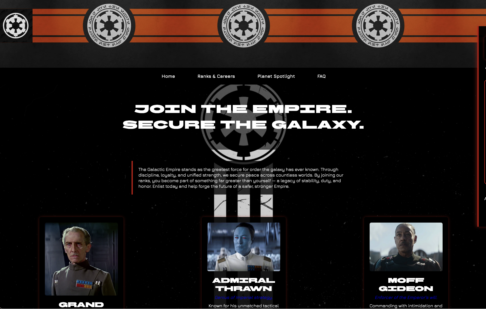
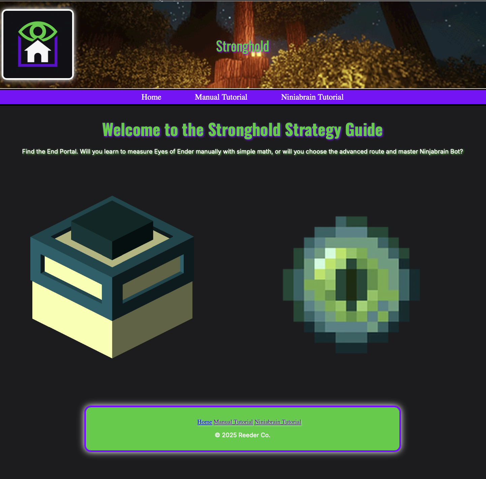
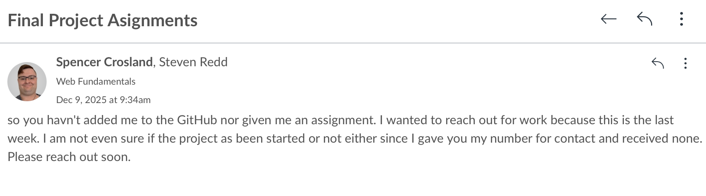

Final Reports
Client Report
Glactic Empire Recruitment Site
As a client, I did struggle at first with not being part of the development process. I really wanted to make the site myself after planning it, and I even started a rough version of the development on my own time. This was because I am a huge Star Wars fan, and so is my father, so I thought making an Empire recruitment site would be a fun project to show off. I am very familiar with the Star Wars universe, so I planned out all the ranks, planets, and famous Empire recruits from Star Wars lore. I used Google to collect images and the GIF for the navigation. I had ChatGPT help me create the FAQ completely and edit the tone of the other pages that I wrote. I also used Google to sample fonts for the page and to find the hex codes for the colors.
Eventually, I became comfortable with stepping back and letting someone else develop the site. I did not receive a link or contact information about the site at first, so I chose to reach out to the lead developer, Tristan Zatylny, to request the link. Within a few hours, I received the link along with an apology for sending it so late, which I appreciated.
The site turned out almost exactly as I had imagined, with only a few variations, such as the lack of borders on the footer and different styles of borders on the images. There was an issue with the Ranks & Careers page when I first reviewed it, so I informed the lead developer.
Lead Developer Report
The Reeder Project
I initiated the project by contacting Mr. Reeder to obtain his site plan and clarify his preferred communication methods. I then coordinated with my junior developers, Clark Carroll and Forrest Hickman, establishing phone and GitHub communication and assigning roles for each page. I built the initial framework for the Home, Manual Tutorial, and Ninjabrain Tutorial pages, including the logo, navigation structure, header design, color scheme, and typography. I also set expectations for weekly progress updates so I could keep Mr. Reeder informed throughout development.
I completed the majority of the home page early on and regularly updated the client while continuing efforts to establish consistent communication with Forrest. Forrest eventually added content to the Ninjabrain page, though it required layout correction, while Clark’s assigned page briefly went offline and showed no visible progress. This was eventually resolved, and Mr. Clark helped me finish his assigned page by styling it and adding content from the site plan. To improve the site visually, I incorporated client-approved GIFs in the header and navigation, centered and styled images with white borders, resized the navigation buttons, and replaced low-contrast hyperlinks with YouTube thumbnails and a styled download button. These changes aligned with Mr. Reeder’s design preferences and enhanced clarity and usability.
By the end of development, the team successfully delivered the full site, complete with all required content, improved visuals, and additional images and GIFs that helped the overall design feel more polished and engaging. I maintained consistent communication with the client, Mr. Reeder, through Canvas to confirm approvals and provide updates on implemented changes. I shared the site link during the second week, and Mr. Reeder was excellent at staying connected and informing me of his preferences throughout the process.
Junior Devoloper Report
Knight Project
For this project, I experienced several difficulties with assignment distribution. I tried to reach out to the team lead, Aidan Kemeny, over Canvas but did not receive a response. I was not added to the GitHub repository until the last week of work, and when I was added, I discovered that no work had been completed on it. I also was not given access to the site plan. Once I was added to GitHub, the team lead assigned me to the reviews page, but without a site plan, I created a generic page that allowed users to add their own reviews. The downside was that I did not know what was being reviewed, so I could not make the content specific.
I eventually reached out to the client, Aubri Knight, for the site plan and discovered that the reviews were prewritten by her for horror films. Since the site is a horror film review site, I discarded my previous work and added all of her reviews to a single page. I also had to hunt down film posters for each movie to include with the reviews, as they were not provided. At this point, the Home page and styling had not yet been started, so I added basic styling to preview the site’s appearance. I created colored text for h1, h2, h3, and p elements, added borders to images and the footer, and created a navigation bar and footer links. I stopped there and reported all changes to my team via text.
The client later provided feedback that the site was intended to have a gallery of film posters, where clicking on a poster would take the user to an individual page containing that film’s review. In response, I created a separate page for each film that is not visible in the navigation bar and updated the Reviews link in the navigation bar to point to a gallery page. I also added this link to the footer. After making each review its own page, I received approval from the client to use AI to generate a review for Alien vs. Predator using her writing style, as she had not created one. I then added this review to the appropriate page. Finally, I informed my team of all changes and reminded them to review the GitHub comments I left each time updates were made.

Helms Project
For this project, I repeatedly attempted to contact the team lead, Steven Redd, through Canvas. I was not added to the GitHub repository, nor did I receive any communication regarding which assignment I should complete. I was not provided with the site plan and had no information about what the site would be. I considered reaching out to the client but decided against it since I had not been assigned a specific page to develop.
Each time we met for class, I contacted the team lead through Canvas but did not receive a response. I also provided my phone number multiple times, yet I still received no communication. Because of this lack of coordination, I do not have a site link to provide for this project. This means that the image is not linked to an external site.
General Experence
The most challenging part of this project was working in a team. Writing code is relatively straightforward; however, assigning tasks and receiving clear assignments proved to be much more difficult. Distributing assignments was easier than receiving them in my role as a junior developer. This experience highlighted the importance of effective communication and professional networking. I worked to overcome these challenges by proactively reaching out to my junior developers through Canvas and SMS messaging. I used positive encouragement and professional delegation to keep the team engaged. I also maintained consistent communication with the client, Mr. Reeder, to ensure expectations were clear. In my role as a junior developer, I continuously attempted to communicate with my lead developers, but with limited success. I remained professional in all outreach through Canvas and SMS and received only one response related to the Knight Project, and unfortunately none for the Helms Project. To move forward, I reached out directly to the client for the Knight Project to obtain the site plan needed to complete my assigned tasks. My fellow junior developer, Spencer Earl, stayed in contact with me both in person and through SMS, allowing us to complete our portions of the work collaboratively. While the entire site was not completed, I believe we were successful in maintaining professional communication and teamwork under challenging circumstances.
What I enjoyed most about this project was seeing how far my skills have progressed. I significantly improved my speed in site creation by not only reusing previous code, but also refining and enhancing it to be more effective. Throughout the project, I encountered new challenges involving image styling, link behavior, and creating visual emphasis within muted color schemes. Each challenge pushed me to think more creatively and to discover new solutions through experimentation and research. This experience deepened my appreciation for web design and ultimately inspired me to add it as my minor at BYU–Idaho.
If I were able to complete this project again, I would implement regular team meetings, such as stand-up meetings. These meetings would allow the team to track completed tasks and upcoming work, helping ensure the site is developed to the highest possible standard. This approach would also reduce communication gaps, prevent missed deadlines, and simplify the creation of required project reports. Additionally, regular meetings would encourage more creative input from junior developers, ensuring that design and styling decisions are collaborative rather than limited to the lead developer and the client.
After this experience, I feel confident working on real-world projects. Given another person’s vision, I had no difficulty bringing the design to life and even contributed several enhancements of my own. I maintained consistent communication with the client, and when my suggestions were not aligned with his expectations, I was able to pivot quickly and offer alternative solutions that contributed to the project’s overall success. I especially enjoyed seeing how much my skills have improved—tasks that once took hours now take only minutes. This progress allowed me to explore new design techniques and further expand my understanding of web development.